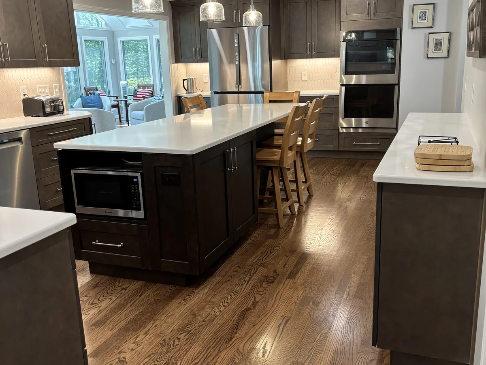
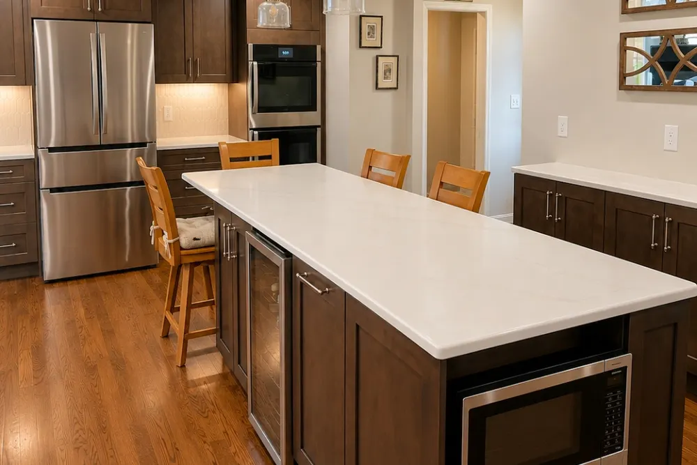
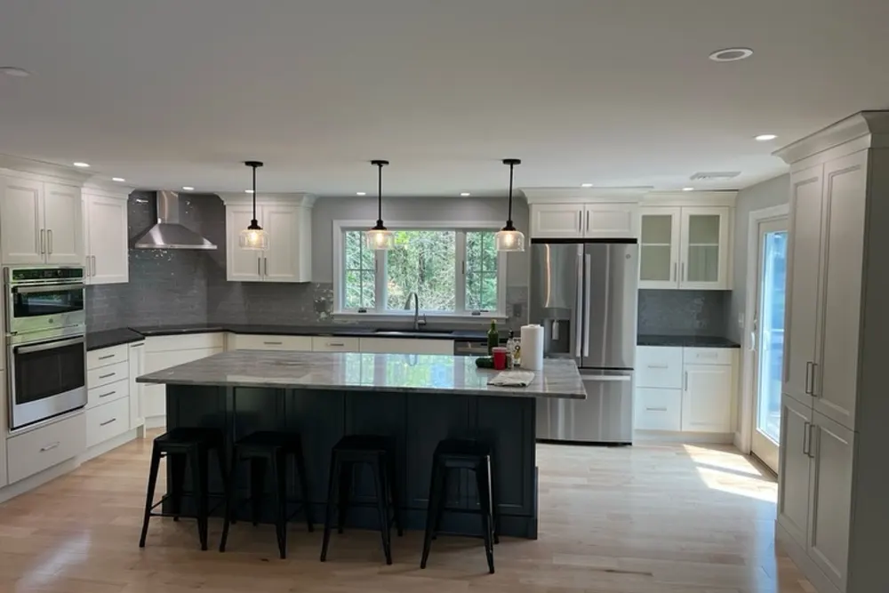
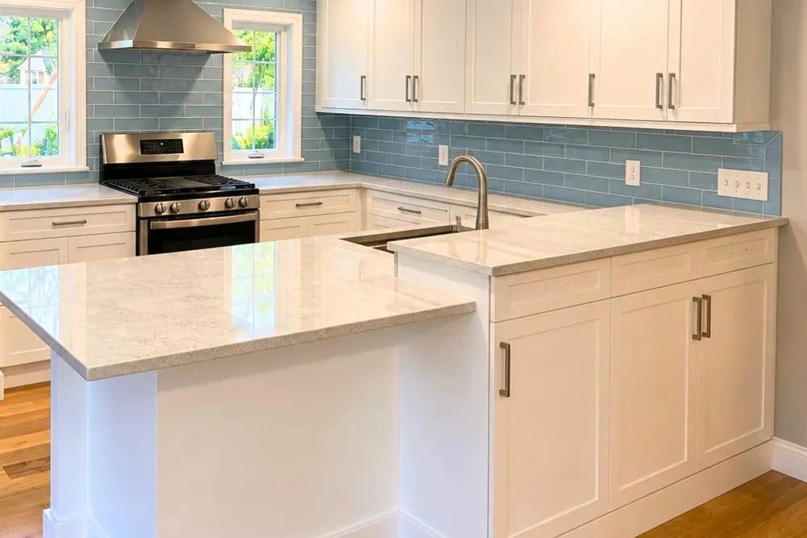
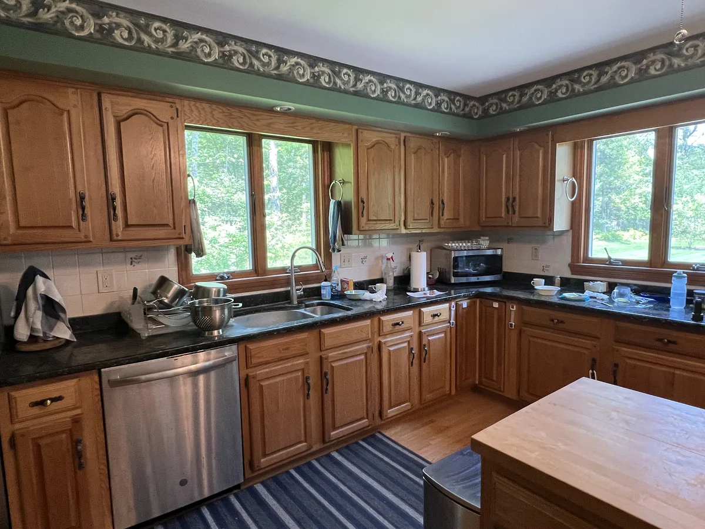
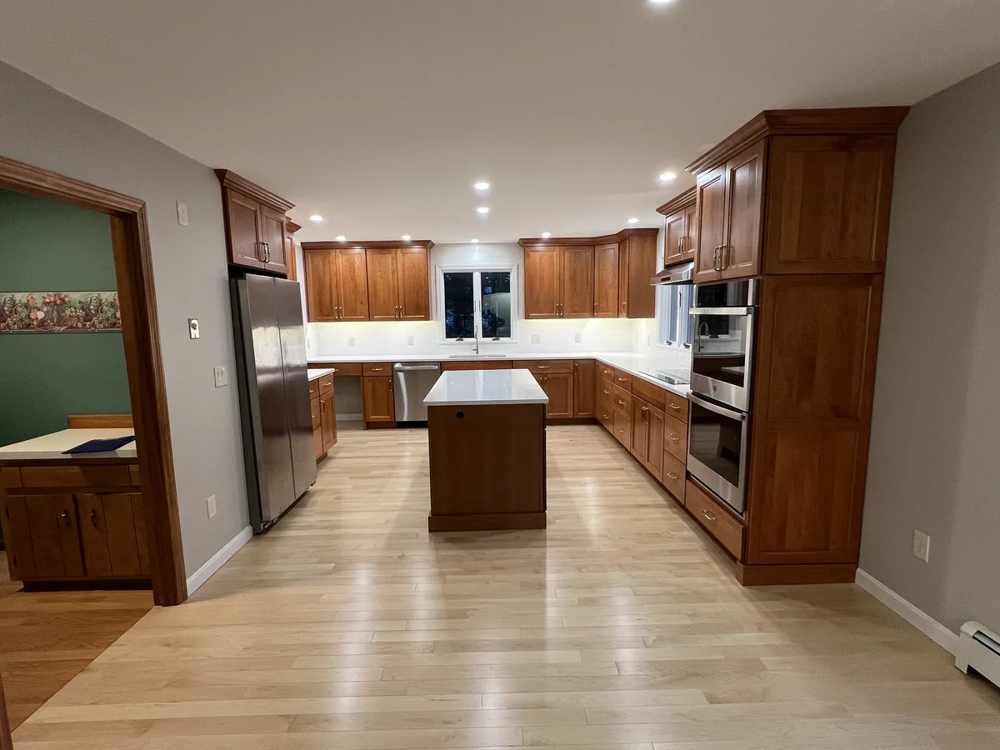
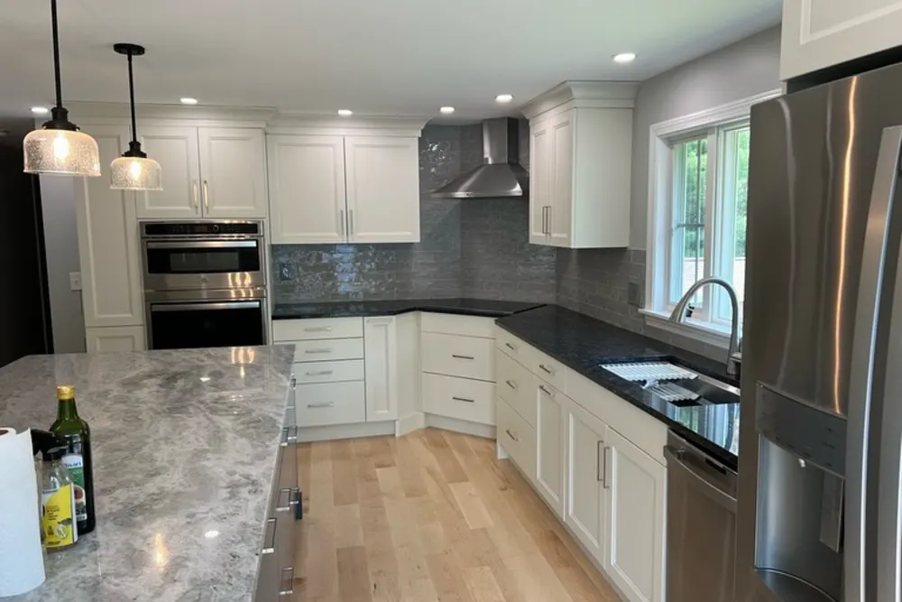
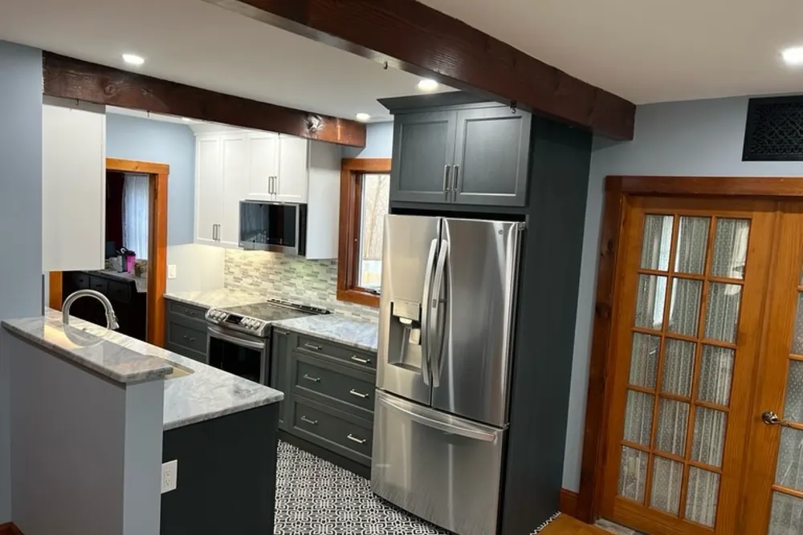
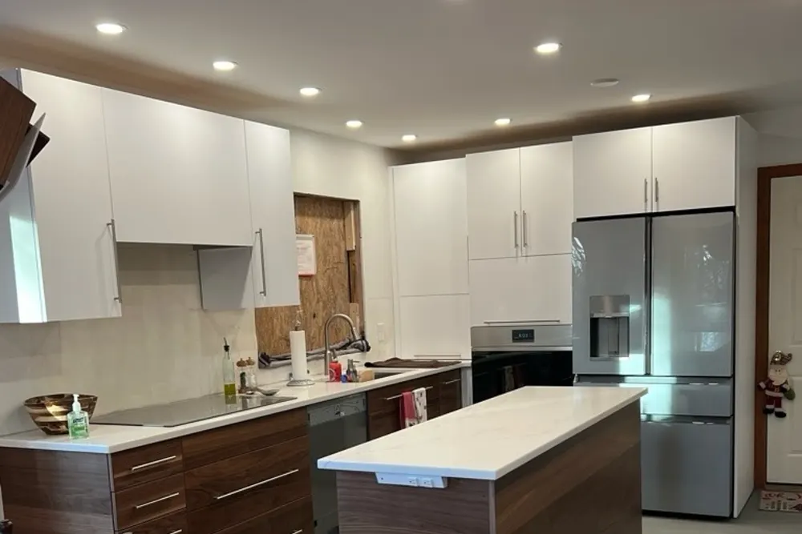
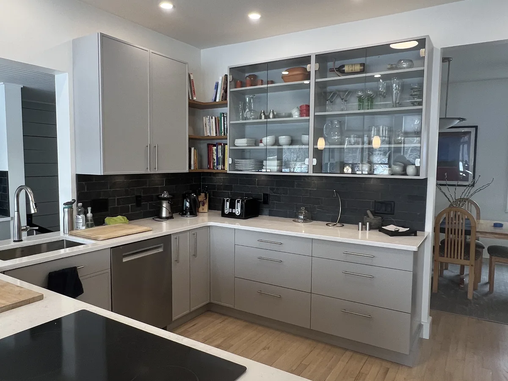

Kitchen remodeling contractors in Massachusetts
Kitchen remodeling contractors in Massachusetts, planned before it gets expensive
Kitchen remodeling contractors at DeFaria Construction plan and build full kitchen remodels, layout changes and refreshes across Essex and Middlesex County. One owner-led team handles cabinets, counters, plumbing and electrical coordination, flooring and finish, with a fixed written price.
Our work
Before, during and after: a real DeFaria kitchen
The demolition, the build and the finished room on one of our kitchen projects. It may not be in your town, but it is the same crew and the same standard of work.
Get a Free Estimate
The short answer
What do kitchen remodeling contractors do?

Kitchen remodeling contractors plan, permit and build a new kitchen inside your existing home. That covers the layout, cabinets, countertops, backsplash, flooring, lighting and appliances, plus the plumbing, electrical and sometimes structural work behind them, all coordinated so the trades show up in the right order.
- Full kitchen remodels, from demolition to the final walkthrough.
- Layout changes, islands and opening walls to the living room.
- Cabinet installation, refacing or painting.
- Quartz, granite and butcher block countertops with tile backsplash.
- Lighting, outlets and appliance circuits by a licensed electrician.
- Sink, dishwasher, pot filler and gas line coordination with licensed trades.
People also look for us as kitchen remodelers or kitchen renovation contractors. Whatever the name, the value is one company responsible for the whole room and one person accountable for the result.
Cost
How much does a kitchen remodel cost in Massachusetts in 2026?

Here are the typical 2026 ranges we see in Essex and Middlesex County. Labor, permits and material prices around greater Boston are higher than national averages, so national calculators tend to come in low.
| Project | Typical 2026 range | What usually drives it up |
|---|---|---|
| Cosmetic refresh, same layout | $18,000 to $30,000 | Counters, backsplash, painted or refaced cabinets |
| Mid-range full remodel | $35,000 to $65,000 | New cabinets, stone counters, appliances, flooring |
| High-end or full gut | $70,000 to $120,000+ | Custom cabinets, layout change, premium appliances |
| Removing a load-bearing wall | Added to the above | Beam, posts, engineering, rerouted pipes and ducts |
| Adding an island | Varies with size | Plumbing or power in the island, stone size |
These are market ranges, not a quote. Cabinets and appliances are usually the largest share of a kitchen budget, and they are also the easiest place to adjust it. Your final price comes in a written, itemized estimate after we see the kitchen.
For the full breakdown, read our kitchen remodel cost guide for Massachusetts.
Scope
What is included in a DeFaria kitchen remodel
Every estimate lists what comes out, what goes in and who does each part. A typical full kitchen remodel includes:
- Dust protection for the rest of the house and a clean path in and out.
- Demolition and disposal of old cabinets, counters and flooring.
- Framing changes, wall removal and beams where the design calls for them.
- Plumbing by a licensed plumber and electrical by a licensed electrician, with permits.
- Drywall or plaster repair, primer and paint.
- Cabinet installation, hardware, crown and filler panels.
- Countertop template and install, sink and faucet.
- Tile backsplash, flooring, under-cabinet and recessed lighting.
- Appliance installation and a final clean before the walkthrough.
If something is outside the scope, such as appliances you buy directly, it is written down so everyone knows who handles it.
Process
Our kitchen remodeling process, step by step

A kitchen has more moving parts than any other room. This is the order we follow:
- Walkthrough, measurements and a conversation about how you cook and live in the space.
- Layout and selections: cabinets, counters, backsplash, flooring and lighting.
- Fixed, itemized estimate.
- Cabinet and material orders, timed so nothing waits on the job.
- Permits with your town building and wiring inspectors, plus plumbing and gas where needed.
- Demolition, framing changes and rough plumbing and electrical, then inspections.
- Walls closed, primed and painted.
- Cabinets installed, counters templated and installed.
- Backsplash, flooring, lighting, appliances and trim.
- Final inspection and a walkthrough with you before sign-off.
You get updates at each stage, and the work area is cleaned at the end of every day.
Permits and code
Permits, licensed trades and the Massachusetts code
Kitchen work in Massachusetts involves several permits. Electrical work is done by a licensed electrician under an electrical permit, plumbing by a licensed plumber, gas lines by a licensed gas fitter, and structural changes fall under the Massachusetts State Building Code with a building permit.
- Electrical permit for new circuits, appliance lines, GFCI countertop outlets and lighting.
- Plumbing permit for a moved sink, a new dishwasher line, an island sink or a pot filler.
- Gas permit for a new range or cooktop location.
- Building permit for wall removal, new openings or beams, often with an engineer's letter.
- Range hood ducted to the outside, sized with any make-up air requirement in mind.
DeFaria pulls the permits for the work we perform and schedules the inspections. Permitted work is on record, which matters for your insurance and a future sale.
Real DeFaria kitchen
During and after: cabinets set, then the finished kitchen
A real DeFaria kitchen in progress, with the new white cabinets installed and the floors protected, and the same kitchen finished with stone counters, open shelves and stainless appliances.


Materials
Cabinets, countertops and finishes that hold up

The materials you pick set the look and most of the budget. Here is how we help homeowners decide:
- Cabinets: stock for tight budgets, semi-custom for most kitchens, custom for odd spaces and older homes.
- Countertops: quartz for low maintenance, granite for natural stone, butcher block for warmth on an island.
- Backsplash: ceramic, porcelain or glass tile, run to the ceiling on a hood wall for a finished look.
- Flooring: hardwood that matches the rest of the house, or porcelain tile and luxury vinyl plank for durability.
- Lighting in layers: recessed, under-cabinet and pendants over the island.
- Soft-close hinges and drawers, pull-outs and a pantry cabinet where space allows.
Need inspiration? See our kitchen remodel ideas for North Shore homes.
Real DeFaria kitchen
Before and after: a kitchen we remodeled
Oak cabinets, dark counters and a dated wallpaper border before the remodel. After: new cabinetry, a center island and light wood floors carried through the room.


Real DeFaria work
Kitchens we remodeled, not stock photos
Recent DeFaria kitchens photographed on the job, from Pepperell to Dracut. Different styles and budgets, the same care with cabinet lines, scribes and trim.






Homes we work on
Kitchens in Capes, Colonials, splits and older North Shore homes
Most kitchens we remodel are in homes built decades ago, and the house shapes the plan as much as the design does.
- Cape Cods: small closed kitchens where opening one wall changes the whole first floor.
- Colonials: kitchens at the back of the house, often next to a dining room homeowners want to combine.
- Split-levels and raised ranches: kitchens open to stairs, with ducts and beams that limit the layout.
- Older North Shore homes in Lynn, Salem, Swampscott and Marblehead: plaster walls, uneven floors and old wiring that usually needs updating.
- Condos: association approvals, shared walls and work hour limits.
We open walls expecting to find something, price likely repairs up front, and show you what we find before fixing it.
Common mistakes
Common kitchen remodel mistakes and how we avoid them
A kitchen is expensive to redo, so it pays to get it right once. These are the mistakes we see most:
- Ordering cabinets late, which leaves the family without a kitchen for weeks.
- A layout that ignores the walking path between sink, range and refrigerator.
- Too few outlets and no plan for lighting under the cabinets.
- A range hood vented into the cabinet or the attic instead of outside.
- Removing a wall without checking what it carries or what runs inside it.
- Flooring installed around the cabinets instead of planned with them.
Our walkthrough, estimate and ordering schedule are built around avoiding each of these.
Timeline
How long does a kitchen remodel take?
Once cabinets and materials are ready, most full kitchen remodels take about six to twelve weeks of work. A refresh with the same layout is faster; a gut with a wall removal takes longer.
| Project | Typical working time |
|---|---|
| Cosmetic refresh, same layout | 2 to 4 weeks |
| Mid-range full remodel | 6 to 10 weeks |
| Full gut with layout change | 8 to 12+ weeks |
Countertops are templated after the cabinets are in, so there is usually a short wait between the two. We plan a temporary kitchen with you so daily life keeps going.
Value
Is a kitchen remodel worth it?
For most families the answer comes down to how long you plan to stay. A kitchen is the room you use every day, and buyers on the North Shore notice a kitchen that has been updated with permits and good workmanship.
The best return comes from a layout that works, durable materials and finishes that fit the rest of the house, not from the most expensive option on every line. We help you decide where to spend and where to save.
Choosing a contractor
How to choose kitchen remodeling contractors
Before you sign with anyone, ask these questions:
- Who pulls the electrical, plumbing, gas and building permits?
- Is the price fixed and itemized, and how are hidden repairs handled?
- When will the cabinets be ordered, and what is the lead time?
- How will the rest of the house be protected from dust?
- How long will we be without a working kitchen?
- Can I see photos of kitchens you built and read real reviews?
- Who is my contact every day?
At DeFaria the last answer is simple: Luiz DeFaria, the owner, leads every kitchen himself.
Reviews
What homeowners say about DeFaria Construction
DeFaria Construction has a 5.0 rating from 15 reviews on Google. See all reviews on Google.
Wow! I couldn’t believe where I would be without Luiz. He completely transformed our kitchen and bathroom over the last year. My wife can’t get over the work he did. Would definitely recommend
Luiz’s work is fabulous. Luiz renovated two bathrooms and our kitchen. Each step in the process moved along quickly and we finished earlier than expected. The crew was always pleasant to be around. We are very pleased with the quality of everything that Luiz did, and the price was reasonable. We…
Luiz and subcontractors do great work. DeFaria Carpentry completed 2 bathroom renovations and we will be starting on a kitchen renovation in the fall. I highly recommend DeFaria Carpentry.
Luiz has been doing construction for us for close to 20 years. Large jobs are small. He does excellent work and we’re always very pleased with it. His quotes are always very reasonable. I would highly recommend him.
FAQ
Kitchen remodeling questions homeowners ask
How much does a kitchen remodel cost in Massachusetts in 2026?
In Essex and Middlesex County a cosmetic kitchen refresh usually runs about $18,000 to $30,000, a mid-range full remodel about $35,000 to $65,000, and a high-end remodel or full gut with a layout change about $70,000 to $120,000 and up. You get a fixed, itemized price in writing after the walkthrough.
Do I need a permit to remodel a kitchen in Massachusetts?
Usually, yes. New circuits, lighting and outlets need an electrical permit pulled by a licensed electrician, moving the sink or adding a dishwasher or pot filler needs a plumbing permit, gas work needs a licensed gas fitter, and removing or changing walls needs a building permit. DeFaria pulls the permits for the work we perform.
How long does a kitchen remodel take?
Most full kitchen remodels take about six to twelve weeks of work once cabinets and materials are ready. Cabinet lead times often run several weeks, so we order them before demolition. A layout change or a wall removal adds time for engineering and inspections.
What should I ask kitchen remodeling contractors before hiring?
Ask who pulls the electrical, plumbing and building permits, whether the price is fixed and itemized, when the cabinets will be ordered, how they protect the rest of the house from dust, how long you will be without a kitchen, and who your contact is every day. Ask for photos of kitchens they built and real reviews.
Can you remove a wall to open my kitchen?
Often, yes. If the wall is load bearing, it needs a properly sized beam and posts, usually designed or confirmed by an engineer, plus a building permit. Pipes, ducts and wires inside the wall also have to be rerouted. We check all of this at the walkthrough before you commit to the layout.
Is quartz or granite better for kitchen countertops?
Both are durable choices. Quartz is engineered, consistent in color and does not need sealing. Granite is natural stone, each slab is unique, and it should be sealed periodically. Many of our clients pick quartz for islands and busy family kitchens, but the right answer depends on the look you want and your budget.
Can we live at home during a kitchen remodel?
Most families do. We seal the kitchen off from the rest of the house, keep a clean path in and out, and help you plan a temporary kitchen with the refrigerator and a microwave in another room. The days without running water in the kitchen are kept as short as possible.
Is DeFaria Construction licensed and insured?
Yes. DeFaria Construction (DeFaria Carpentry, Inc.) is licensed and insured, BBB Accredited with an A+ rating, and every kitchen is owner-led by Luiz DeFaria from the first walkthrough to the final one.
Who does the work
Owner-led kitchen remodeling from a local North Shore builder

DeFaria Construction is the trade name of DeFaria Carpentry, Inc., a Lynn-based, licensed and insured contractor in business since 2015 and BBB Accredited with an A+ rating. One longtime client wrote on Google that Luiz has been doing construction for their family for close to 20 years.
On a kitchen that experience shows in the details: cabinets that are level and plumb on floors that are not, scribes that close the gaps against old walls, and trades scheduled so the room is never sitting idle. Google reviewers describe kitchens and bathrooms transformed and projects that finished earlier than expected, and that is the standard on every kitchen we build.
Request a Free Estimate Call (617) 893-2221